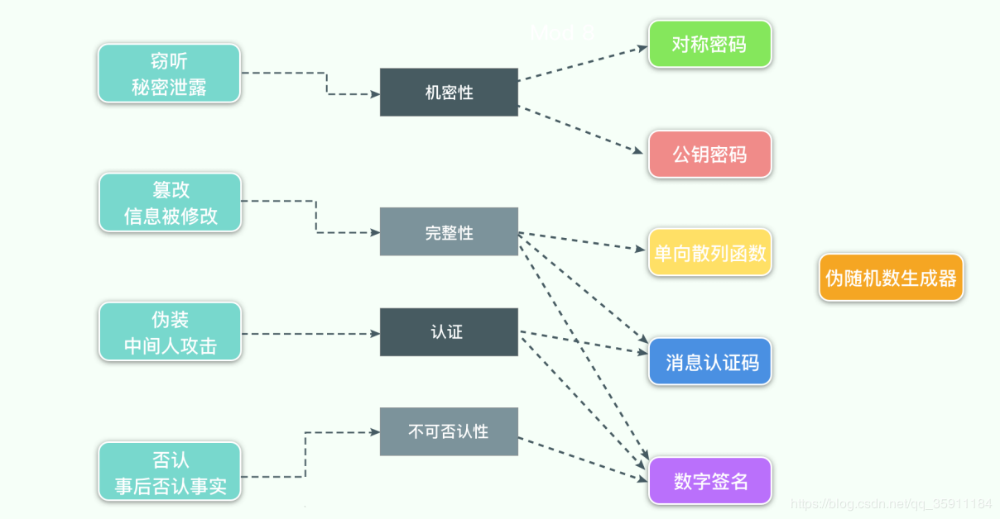

一、密码学家的工具箱 在密码学中，有一个著名的说法，叫“密码学家的工具箱”，指的是密码学中常用的6种技术：对称密码、公钥密码、单向散列函数、消息认证码、数字签名、伪随机数生成器。它们在信息安全中发挥着重要的作用，我们可以用下图来表示各项技术与其解决的问题之间的关系：
Web Crypto API ，就很好地实现了上述几种技术，它提供了常用算法的加密/解密/签名/验证/摘要/key生成/协商等操作，并统一采用Promise来处理异步逻辑，为密码学在Web端的实现，提供了较为标准的支持。
今天我们就来尝试下，使用Web Crypto API简单实现一个“密码学家的工具箱”
二、开工之前 1.浏览器兼容性 由于是新特性，我们需要先查看下浏览器兼容性 ，来决定是否使用，如下图：
需要IE11及以上才支持
由于是安全相关的API，Chrome要求在HTTPS下才能使用
如果我们需要兼容旧版浏览器，还可以尝试下polyfill/shim: webcrypto-shim 、webcrypto-liner
2.检测客户端浏览器是否支持 如下代码可以帮助我们检测当前浏览器是否存在crypto全局对象，因为大部分方法，都在crypto.subtle下：
1 2 3 4 5 6 7 var crypto = window .crypto || window .msCrypto; if (crypto.subtle){ ... } else { console .log("Unable to create window.crypto object" ); }
当然如果你对Web Crypto API或者密码学已经有所了解，需要查看某些密码算法在当前浏览器的支持情况，这里有一个Live Table 可以满足你的要求。
三、开始打造 伪随机数在密码技术的很多场景中都会被用到，比如生成密钥(用于对称加密或消息认证码)、生成初始向量、生成盐等。
API语法：
1 cryptoObj.getRandomValues(typedArray);
说明：
由于密码操作的对象本质上是比特序列，所以Web Crypto API传入的消息数据通常会是ArrayBuffer ，比如这里的参数是一个TypedArray ，该参数会被符合密码学要求的随机值填充
示例：
1 2 3 var array = new Uint32Array (10 );window .crypto.getRandomValues(array);console .log(array);
又称为单向哈希函数、杂凑函数，可以把任意长度的输入消息，转变成固定长度的输出(散列值)。单向，指的是无法根据散列值，反推输入的消息。常见的有SHA-256、SHA-512等
API语法：
1 const digest = crypto.subtle.digest(algorithm, data);
说明：
当前支持的算法：
SHA-1(不推荐)
SHA-256
SHA-384
SHA-512
示例：
1 2 3 4 5 6 7 8 9 10 11 const text = 'An obscure body in the S-K System, your majesty. The inhabitants refer to it as the planet Earth.' ;async function digestMessage (message ) const encoder = new TextEncoder(); const data = encoder.encode(message); const hash = await crypto.subtle.digest('SHA-256' , data); return hash; } const digestBuffer = await digestMessage(text);console .log(digestBuffer.byteLength);
消息认证码可以用来确保消息的完整性，并提供认证，需要配合共享密钥和特定算法来实现，最终会输出固定长度的MAC值。
HMAC是一种使用单向散列函数来构造消息认证码的方法，开头的H就是Hash的意思，在Web Crypto API中可以通过crypto.subtle.sign()和verify()方法实现
语法：
1 2 3 const signature = crypto.subtle.sign(algorithm, key, data);const result = crypto.subtle.verify(algorithm, key, mac, data);
说明：
通过传入”HMAC”字符串或者{ “name”: “HMAC” }，来使用HMAC；key为共享密钥，可以事先生成或导入；mac为散列值；data为ArrayBuffer或ArrayBuffer视图对象
示例：
1 2 3 4 5 6 7 8 9 10 11 12 13 14 15 16 17 18 19 20 21 22 23 24 25 26 27 28 29 30 31 const text = "An obscure body in the S-K System, your majesty. The inhabitants refer to it as the planet Earth." ;async function getMac (message, key ) const encoder = new TextEncoder(); const data = encoder.encode(message); return await crypto.subtle.sign("HMAC" , key, data); } async function verifyMac (message, key, mac ) const encoder = new TextEncoder(); const data = encoder.encode(message); return await crypto.subtle.verify("HMAC" , key, mac, data); } async function generateKey ( return await crypto.subtle.generateKey( { name: "HMAC" , hash: { name : "SHA-256" } }, true , ["sign" , "verify" ] ); } const key = await generateKey();const mac = await getMac(text, key);console .log(mac.byteLength); const result = await verifyMac(text, key, mac);console .log(result);
也称为共享密钥加密，即加密与解密使用相同的密钥，加解密效率高，但存在密钥配送的问题，常见的如DES、AES等。可以通过crypto.subtle.encrypt()和decrypt()方法实现，这里以AES-GCM 为例：
语法：
1 2 3 const result = crypto.subtle.encrypt(algorithm, key, data);const result = crypto.subtle.decrypt(algorithm, key, data);
说明：
当前支持的对称加密算法：
key为共享密钥，可以事先生成或导入；data为ArrayBuffer或ArrayBuffer视图对象
示例：
1 2 3 4 5 6 7 8 9 10 11 12 13 14 15 16 17 18 19 20 21 22 23 24 25 26 27 28 29 30 31 32 33 34 35 36 37 38 39 40 41 42 43 44 45 46 47 const text = "An obscure body in the S-K System, your majesty. The inhabitants refer to it as the planet Earth." ;let iv;async function encryptMessage (message, key ) const encoder = new TextEncoder(); const data = encoder.encode(message); iv = crypto.getRandomValues(new Uint8Array (12 )); return await crypto.subtle.encrypt( { name: "AES-GCM" , iv, tagLength: 128 , }, key, data ); } async function decryptMessage (cipherText, iv, key ) const result = await crypto.subtle.decrypt( { name: "AES-GCM" , iv, tagLength: 128 }, key, cipherText ); const decoder = new TextDecoder(); return decoder.decode(result); } async function generateKey ( return await crypto.subtle.generateKey( { name: "AES-GCM" , length: 256 , }, true , ["encrypt" , "decrypt" ] ); } const key = await generateKey();const cipherText = await encryptMessage(text, key);const plainText = await decryptMessage(cipherText, iv, key);console .log(plainText);
又称公钥加密，使用前需要生成一对公私密钥对，用公钥加密的消息，只能用私钥解密。它解决了密钥配送的问题，通常会配合对称加密一起使用，常用的如RSA。我们依旧可以通过crypto.subtle.encrypt()和decrypt()方法实现
语法：
1 2 3 const result = crypto.subtle.encrypt(algorithm, publicKey, data);const result = crypto.subtle.decrypt(algorithm, privateKey, data);
说明：
当前支持的非对称加密算法：
publicKey/privateKey为公私密钥；data为ArrayBuffer或ArrayBuffer视图对象
示例：
1 2 3 4 5 6 7 8 9 10 11 12 13 14 15 16 17 18 19 20 21 22 23 24 25 26 27 28 29 30 31 32 33 34 35 36 37 38 39 40 41 42 43 const text = "An obscure body in the S-K System, your majesty. The inhabitants refer to it as the planet Earth." ;async function encryptMessage (message, publicKey ) const encoder = new TextEncoder(); const data = encoder.encode(message); return await crypto.subtle.encrypt( { name: "RSA-OAEP" , }, publicKey, data ); } async function decryptMessage (cipherText, privateKey ) const result = await crypto.subtle.decrypt( { name: "RSA-OAEP" }, privateKey, cipherText ); const decoder = new TextDecoder(); return decoder.decode(result); } async function generateKeyPair ( return await crypto.subtle.generateKey( { name: "RSA-OAEP" , modulusLength: 2048 , publicExponent: new Uint8Array ([0x01 , 0x00 , 0x01 ]), hash: "SHA-256" , }, true , ["encrypt" , "decrypt" ] ); } const keyPair = await generateKeyPair();const cipherText = await encryptMessage(text, keyPair.publicKey);const plainText = await decryptMessage(cipherText, keyPair.privateKey);console .log(plainText);
消息认证码的局限性在于不能防否认，因为它使用了共享密钥，而配合公钥加密，数字签名就可以解决这个问题，流程如下图：
语法：
1 2 3 const signature = crypto.subtle.sign(algorithm, privateKey, data);const result = crypto.subtle.verify(algorithm, publicKey, signature, data);
说明：
当前支持的签名算法：
RSASSA-PKCS1-v1_5
RSA-PSS
ECDSA
publicKey/privateKey为公私密钥；data为ArrayBuffer或ArrayBuffer视图对象
示例：
1 2 3 4 5 6 7 8 9 10 11 12 13 14 15 16 17 18 19 20 21 22 23 24 25 26 27 28 29 30 31 32 33 34 35 36 37 38 39 40 41 42 43 44 45 46 const text = "An obscure body in the S-K System, your majesty. The inhabitants refer to it as the planet Earth." ;async function signMessage (message, privateKey ) const encoder = new TextEncoder(); const data = encoder.encode(message); return await crypto.subtle.sign( { name: "RSA-PSS" , saltLength: 32 , }, privateKey, data ); } async function verifyMessage (message, signature, publicKey ) const encoder = new TextEncoder(); const data = encoder.encode(message); return await crypto.subtle.verify( { name: "RSA-PSS" , saltLength: 32 , }, publicKey, signature, data ); } async function generateKeyPair ( return await crypto.subtle.generateKey( { name: "RSA-PSS" , modulusLength: 2048 , publicExponent: new Uint8Array ([0x01 , 0x00 , 0x01 ]), hash: "SHA-256" , }, true , ["sign" , "verify" ] ); } const keyPair = await generateKeyPair();const signature = await signMessage(text, keyPair.privateKey);const result = await verifyMessage(text, signature, keyPair.publicKey);console .log(result);
四、完工收尾 通过Web Crypto API，我们简单实现了“密码学家的工具箱”，从示例代码中，我们会发现绝大部分的接口都是window.crypto.subtle的方法，方法的输入均为ArrayBuffer，返回则是Promise对象。
由于Web加密标准还在演进中，各浏览器对标准的支持各不相同，大家还是需要根据实际项目需求来取舍。除了文中谈到的，Web Crypto API还有一些其他方法，感兴趣的同学可以从MDN 了解更多。
由于文章中涉及的知识点较多，本人阅读材料有限，行文中难免疏漏，还望大家不吝指正。
参考文章：
Web Crypto API - MDN
Web Cryptography API Examples
Examples - MDN
Web Crypto API简介
W3C Recommendation